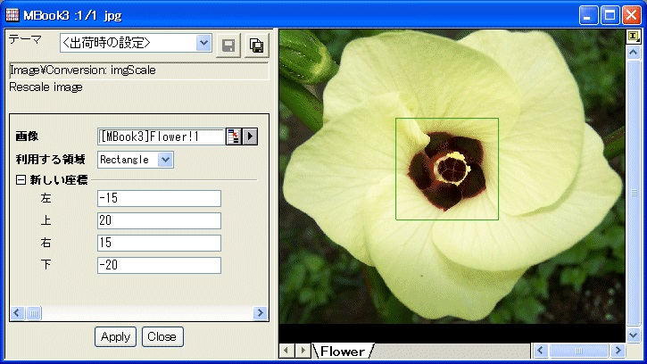

内容 |
画像のスケール
画像を再スケールします
このコマンドはスクリプトからアクセスできません。これはOriginProのみの機能です。
|
画像 |
操作する入力画像を指定します。デフォルトの入力はアクティブイメージです。 |
|
利用する領域 |
新しい座標を適用する領域を指定します。
|
|
左 |
利用可能な領域の最も左のX座標を指定します。 |
|
上 |
利用可能な領域の最も上のY座標を指定します。 |
|
右 |
利用可能な領域の最も右のX座標を指定します。 |
|
下 |
利用可能な領域の最も下のY座標を指定します。 |
このXファンクションは、フル画像または選択した矩形領域に新しいXY座標スケールを適用して画像を再スケールします。
選択した利用可能な領域がフル画像の場合、指定した左および右の値が与えられ、画像のX座標の最小値が左に、X座標の最大値が右にセットされます。その他のX座標は再設定され、左と右の間で線形で等間隔になります。同様に、指定された上と下の値が与えられ、画像のY座標の最小値が上に、Y座標の最大値が下にセットされます。 その他のY座標は再設定され、下と上の間で線形で等間隔になります。
利用可能な領域が矩形の場合、ユーザは画像上の矩形オブジェクトを移動およびサイズ変更することで、その領域を選択することができます。指定された左、上、右、下の座標値が与えられ、選択した領域の左、上、右、下のXY座標がこれらの値に再設定され、その他の座標値は、それに従って、選択した領域の座標が線形で等間隔になるよう維持します。選択した領域の新しいXY座標に従って、画像のその他の領域のXY座標が再配置されます。結果として、入力画像が再スケールされます。
次のサンプルは、このXファンクションを使って、選択した矩形領域上で新しいXY座標スケールを指定することにより画像を再スケールする方法を示しています。
1. 新しい行列を作成し、\Samples\Image Processing and Analysisフォルダにある Flower.jpg ファイルをインポートします。
2. メニューから、「行列：次数/座標値の設定... 」を選び、ダイアログを開くと、X座標スケールが0から931、Y座標スケールが0から793になっていることが分かります。
3. 次数/座標値の設定ダイアログを閉じ、メニューから「画像：変換：再スケール」を選び、Xファンクションパネルでこの関数を開きます。
4. 利用する領域を矩形にし、下図のように画像上の矩形オブジェクトを移動またはサイズ変更して、座標値を指定します。

「5. 適用」ボタンをクリックして画像を再スケールします。次数/座標値の設定ダイアログを再度開き、XY座標が変わったことを確認します。